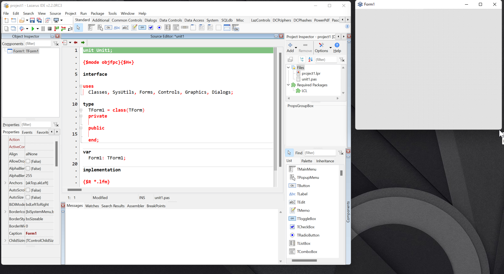

O padrão do Lazarus é ter: Editor de propriedades de componentes, editor de código e explorador de código+componentes com cada uma de suas janelas vazadas, isto é, separados da IDE principal e como janelas independentes. Isso pode ser um pouco espalhafatoso no início, então se você quiser algo mais integrado a IDE poderemos juntar o editor de código, propriedades, explorador de código+componentes mais integrados à IDE. Não ficará 100% parecido com o Delphi porque o editor de formulário continuará separado dos restantes, ficando assim:

Se gostou da ancoragem acima, então vá em Packages->Install/Uninstall packages(Instalar/desinstalar pacotes) e selecione os seguintes pacotes para instalação:
Depois de adicionar os pacotes indicados clique em “Salvar e reconstruir IDE”. Ao iniciar o IDE pela segunda vez, o programa já aparecerá com algumas docagens.
Agora temos um ambiente melhor, porém note que a janela de design de formulário está separada do editor de código. Há uma polêmica aqui, do jeito que está é muito bom para quem tem dois ou mais monitores, monitores 4K ou Superwide - nestes setups de monitores há espaço de sobra para acomodar tudo. Agora, pense em quem têm apenas um monitor FullHD e acostumado com o jeito Delphi-like onde o editor de formulários fica exatamente onde está o editor de código e com usod da tecla F12 ficar alternando entre um e o outro. Quem tem apenas 1 monitor em FullHD, na minha opinião é melhor trabalhar com tudo docado, mas com monitores maiores ou mais de um deles é bem vantajoso ter o design de formulário separado.
A extensão abaixo é para quem já está acostumado com o jeito Delphi-like onde o editor de formulários fica exatamente onde está o editor de código e com a tecla F12 ficar alternando entre um e o outro. Instale o seguinte pacote:
O dockedformeditor é usado em conjunto com AnchorDocking e AnchorDockingDsgn, ele funciona harmoniosamente bem, muito diferente do sparta_dockedformeditor que é muito bugado. Com o dockedformeditor você terá o formulário docado na mesma área onde também fica o editor de código:
Mas um simples clique em ‘Anchors’ e então verá os mesmos itens com ênfase nas posições e ancoramento:
ALERTA: Nunca use estes pacotes em conjunto com os pacotes Spartta que tem propósito similar, como por exemplo o spartta_formeditor pois isso trará certas instabilidades, por exemplo. chamar a janela do ‘Fields Editor’ e ela ir para trás da IDE e você ficar procurando-o desajeitadamente. O pacote ‘spartta’ foi descontinuado, o anchor docking é um fork dele que foi muito melhorado.
ALERTA #2: Parece que o dockedformeditor não está disponível no Lazarus 2.0.12.